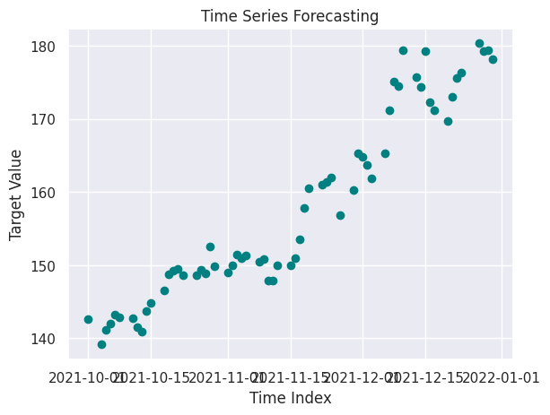
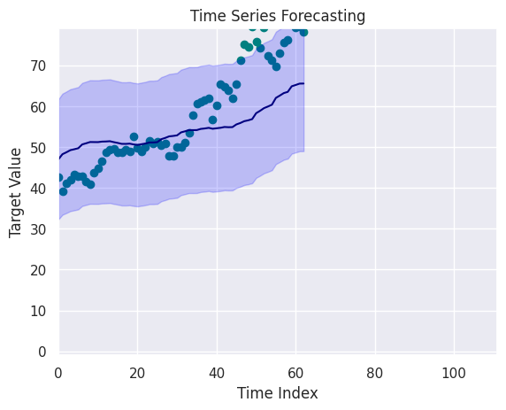
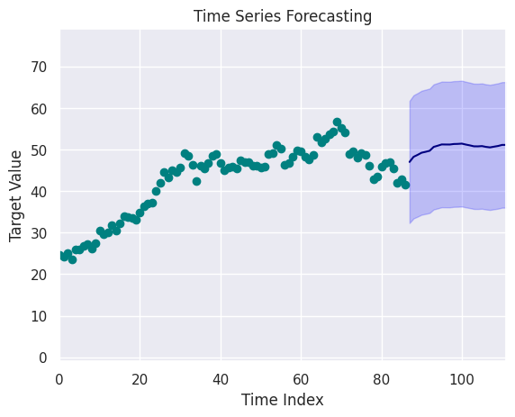

1import matplotlib.animation as animation
2import matplotlib.pyplot as plt
3import numpy as np
4import pandas as pd
5from prophet import Prophet
6
7from src.utils.misc import init_notebook
1init_notebook()
Prophet#
Pré-traitement pour Prophet#
1# relecture des données (sans detrend)
2data_folder = "data/raw"
3stock_name = "AAPL"
4df = pd.read_csv(
5 f"{data_folder}/{stock_name}.csv", parse_dates=["Date"], index_col="Date"
6)
7print(f"{df.shape = }")
df.shape = (756, 6)
1train_start_date = "2019"
2train_end_date = "2021-10-01"
3df_train = df.loc[train_start_date:train_end_date].copy()
4df_test = df.loc[train_end_date:].copy()
1df_train["time_dummy"] = range(len(df_train))
2df_test["time_dummy"] = range(len(df_test))
3df_test["time_dummy"] += len(df_train)
4df_train["day"] = df_train.index.day
5df_test["day"] = df_test.index.day
1df_train.shape
(694, 8)
1x = df_train[[]].copy()
1x_col = ["time_dummy", "day"]
2y_col = ["Close"]
1x["ds"] = df_train.index
2x["y"] = df_train[["Close"]]
1df_test.head()
| Open | High | Low | Close | Adj Close | Volume | time_dummy | day | |
|---|---|---|---|---|---|---|---|---|
| Date | ||||||||
| 2021-10-01 | 141.899994 | 142.919998 | 139.110001 | 142.649994 | 141.018539 | 94639600 | 694 | 1 |
| 2021-10-04 | 141.759995 | 142.210007 | 138.270004 | 139.139999 | 137.548676 | 98322000 | 695 | 4 |
| 2021-10-05 | 139.490005 | 142.240005 | 139.360001 | 141.110001 | 139.496140 | 80861100 | 696 | 5 |
| 2021-10-06 | 139.470001 | 142.149994 | 138.369995 | 142.000000 | 140.375946 | 83221100 | 697 | 6 |
| 2021-10-07 | 143.059998 | 144.220001 | 142.720001 | 143.289993 | 141.651215 | 61732700 | 698 | 7 |
1x_test = df_test[x_col]
2y_test = df_test[y_col]
1x.head()
| ds | y | |
|---|---|---|
| Date | ||
| 2019-01-02 | 2019-01-02 | 39.480000 |
| 2019-01-03 | 2019-01-03 | 35.547501 |
| 2019-01-04 | 2019-01-04 | 37.064999 |
| 2019-01-07 | 2019-01-07 | 36.982498 |
| 2019-01-08 | 2019-01-08 | 37.687500 |
Prédiction#
Calcul de la prédiction#
1model = Prophet()
2model.fit(x)
12:40:23 - cmdstanpy - INFO - Chain [1] start processing
12:40:23 - cmdstanpy - INFO - Chain [1] done processing
<prophet.forecaster.Prophet at 0x7f8f96a17620>
1future = x_test.copy()
2future["ds"] = x_test.index
1forecast = model.predict(future)
2forecast[["ds", "yhat", "yhat_lower", "yhat_upper"]].tail()
| ds | yhat | yhat_lower | yhat_upper | |
|---|---|---|---|---|
| 58 | 2021-12-23 | 163.485849 | 157.426037 | 170.239443 |
| 59 | 2021-12-27 | 164.851525 | 158.991212 | 171.903764 |
| 60 | 2021-12-28 | 165.169482 | 158.760092 | 172.229201 |
| 61 | 2021-12-29 | 165.506546 | 159.452344 | 172.494140 |
| 62 | 2021-12-30 | 165.524170 | 159.654795 | 172.964808 |
Affichage de la prédiction#
1fig, ax1 = plt.subplots(figsize=(10, 10))
2fig1 = model.plot(forecast, ax=ax1)
3df[["Close"]].loc[train_end_date:].plot(ax=ax1, color="orange")
4plt.legend()
/home/runner/work/stock-analysis/stock-analysis/.venv/lib/python3.13/site-packages/pandas/plotting/_matplotlib/core.py:981: UserWarning: This axis already has a converter set and is updating to a potentially incompatible converter
return ax.plot(*args, **kwds)
<matplotlib.legend.Legend at 0x7f8f9663ee90>
1forecast
| ds | trend | yhat_lower | yhat_upper | trend_lower | trend_upper | additive_terms | additive_terms_lower | additive_terms_upper | weekly | weekly_lower | weekly_upper | yearly | yearly_lower | yearly_upper | multiplicative_terms | multiplicative_terms_lower | multiplicative_terms_upper | yhat | |
|---|---|---|---|---|---|---|---|---|---|---|---|---|---|---|---|---|---|---|---|
| 0 | 2021-10-01 | 150.702288 | 142.801825 | 151.188680 | 150.702288 | 150.702288 | -3.705472 | -3.705472 | -3.705472 | -2.303254 | -2.303254 | -2.303254 | -1.402217 | -1.402217 | -1.402217 | 0.0 | 0.0 | 0.0 | 146.996816 |
| 1 | 2021-10-04 | 150.981555 | 144.294753 | 152.332969 | 150.981555 | 150.981555 | -2.750752 | -2.750752 | -2.750752 | -2.245650 | -2.245650 | -2.245650 | -0.505102 | -0.505102 | -0.505102 | 0.0 | 0.0 | 0.0 | 148.230803 |
| 2 | 2021-10-05 | 151.074644 | 144.497386 | 152.711693 | 151.074644 | 151.074644 | -2.376332 | -2.376332 | -2.376332 | -2.177689 | -2.177689 | -2.177689 | -0.198643 | -0.198643 | -0.198643 | 0.0 | 0.0 | 0.0 | 148.698312 |
| 3 | 2021-10-06 | 151.167733 | 145.056539 | 153.458411 | 151.167733 | 151.167733 | -1.950305 | -1.950305 | -1.950305 | -2.049164 | -2.049164 | -2.049164 | 0.098859 | 0.098859 | 0.098859 | 0.0 | 0.0 | 0.0 | 149.217428 |
| 4 | 2021-10-07 | 151.260822 | 145.294734 | 153.276163 | 151.260822 | 151.260822 | -1.819700 | -1.819700 | -1.819700 | -2.200123 | -2.200123 | -2.200123 | 0.380424 | 0.380424 | 0.380424 | 0.0 | 0.0 | 0.0 | 149.441122 |
| ... | ... | ... | ... | ... | ... | ... | ... | ... | ... | ... | ... | ... | ... | ... | ... | ... | ... | ... | ... |
| 58 | 2021-12-23 | 158.428668 | 157.426037 | 170.239443 | 154.163328 | 163.548673 | 5.057181 | 5.057181 | 5.057181 | -2.200123 | -2.200123 | -2.200123 | 7.257305 | 7.257305 | 7.257305 | 0.0 | 0.0 | 0.0 | 163.485849 |
| 59 | 2021-12-27 | 158.801024 | 158.991212 | 171.903764 | 154.392920 | 164.114042 | 6.050501 | 6.050501 | 6.050501 | -2.245650 | -2.245650 | -2.245650 | 8.296151 | 8.296151 | 8.296151 | 0.0 | 0.0 | 0.0 | 164.851525 |
| 60 | 2021-12-28 | 158.894113 | 158.760092 | 172.229201 | 154.370054 | 164.308392 | 6.275369 | 6.275369 | 6.275369 | -2.177689 | -2.177689 | -2.177689 | 8.453057 | 8.453057 | 8.453057 | 0.0 | 0.0 | 0.0 | 165.169482 |
| 61 | 2021-12-29 | 158.987202 | 159.452344 | 172.494140 | 154.331283 | 164.537737 | 6.519344 | 6.519344 | 6.519344 | -2.049164 | -2.049164 | -2.049164 | 8.568508 | 8.568508 | 8.568508 | 0.0 | 0.0 | 0.0 | 165.506546 |
| 62 | 2021-12-30 | 159.080291 | 159.654795 | 172.964808 | 154.295934 | 164.815938 | 6.443880 | 6.443880 | 6.443880 | -2.200123 | -2.200123 | -2.200123 | 8.644003 | 8.644003 | 8.644003 | 0.0 | 0.0 | 0.0 | 165.524170 |
63 rows × 19 columns
Prophet manual plot#
1future
| time_dummy | day | ds | |
|---|---|---|---|
| Date | |||
| 2021-10-01 | 694 | 1 | 2021-10-01 |
| 2021-10-04 | 695 | 4 | 2021-10-04 |
| 2021-10-05 | 696 | 5 | 2021-10-05 |
| 2021-10-06 | 697 | 6 | 2021-10-06 |
| 2021-10-07 | 698 | 7 | 2021-10-07 |
| ... | ... | ... | ... |
| 2021-12-23 | 752 | 23 | 2021-12-23 |
| 2021-12-27 | 753 | 27 | 2021-12-27 |
| 2021-12-28 | 754 | 28 | 2021-12-28 |
| 2021-12-29 | 755 | 29 | 2021-12-29 |
| 2021-12-30 | 756 | 30 | 2021-12-30 |
63 rows × 3 columns
1import matplotlib.pyplot as plt
2
3# Suppose que 'df' contient les données historiques et 'forecast' les prédictions
4fig, ax = plt.subplots(figsize=(10, 6))
5
6# # 1️⃣ Données réelles
7# ax.plot(future['ds'], future['Close'], 'k.', label='Observations', alpha=0.6)
8
9# 2️⃣ Prédictions
10ax.plot(forecast["ds"], forecast["yhat"], color="blue", label="Prédiction")
11
12# 3️⃣ Intervalle de confiance
13ax.fill_between(
14 forecast["ds"],
15 forecast["yhat_lower"],
16 forecast["yhat_upper"],
17 color="blue",
18 alpha=0.2,
19 label="Intervalle de confiance",
20)
21
22# 4️⃣ Options esthétiques
23ax.set_title("Prévision avec Prophet (personnalisée)", fontsize=14)
24ax.set_xlabel("Date")
25ax.set_ylabel("Valeur prédite")
26ax.legend()
27ax.grid(True, alpha=0.3)
28
29
30df[["Close"]].loc[train_end_date:].plot(ax=ax, color="orange")
31
32plt.show()
/home/runner/work/stock-analysis/stock-analysis/.venv/lib/python3.13/site-packages/pandas/plotting/_matplotlib/core.py:981: UserWarning: This axis already has a converter set and is updating to a potentially incompatible converter
return ax.plot(*args, **kwds)
Animation (working but not satisfying)#
1y = df["Close"].loc[train_end_date:]
2future_x = forecast["ds"]
1fig, ax = plt.subplots()
2ax.set_title("Time Series Forecasting")
3ax.set_xlabel("Time Index")
4ax.set_ylabel("Target Value")
5ax.scatter(future_x, y, color="teal")
6
7(line,) = ax.plot([], [], color="navy")

1beginning_x = ""
2beginning_y = df["Close"].loc[train_end_date:]
3
4y = df["Close"].loc[train_end_date:] - 100
5future_x = range(len(y)) # forecast["ds"]
6future_mean = forecast["yhat"] - 100
7future_std = forecast["yhat"] * 0.1
8
9# Création de la figure
10fig, ax = plt.subplots()
11ax.set_title("Time Series Forecasting")
12ax.set_xlabel("Time Index")
13ax.set_ylabel("Target Value")
14ax.scatter(future_x, y, color="teal")
15
16(line,) = ax.plot([], [], color="navy")
17fill = None
18
19# Limites initiales
20# ax.set_xlim(0, 25)
21# ax.set_ylim(-1, 1.5)
22
23
24def init():
25 line.set_data([], [])
26 return (line,)
27
28
29def animate(i):
30 global fill
31 if fill:
32 fill.remove()
33
34 x_data = future_x[:i]
35 y_mean = future_mean[:i]
36 y_std = future_std[:i]
37
38 line.set_data(x_data, y_mean)
39
40 if len(x_data) > 0:
41 fill = ax.fill_between(
42 x_data, y_mean - y_std, y_mean + y_std, color="blue", alpha=0.2
43 )
44 target_xmax = 25 + i * 1.5
45 target_ymax = max(1.5, np.max(y_mean + y_std) + 0.2)
46 else:
47 target_xmax = 25
48 target_ymax = 1.5
49
50 # --- Zoom fluide (effet easing) ---
51 current_xlim = ax.get_xlim()
52 current_ylim = ax.get_ylim()
53 smooth_xmax = current_xlim[1] + 0.15 * (target_xmax - current_xlim[1])
54 smooth_ymax = current_ylim[1] + 0.15 * (target_ymax - current_ylim[1])
55 ax.set_xlim(0, smooth_xmax)
56 ax.set_ylim(-1, smooth_ymax)
57 # -----------------------------------
58
59 return line, fill if fill else line
60
61
62ani = animation.FuncAnimation(
63 fig, animate, init_func=init, frames=len(future_x) + 1, interval=200, blit=False
64)
65
66ani.save("prophet.gif", writer="pillow", fps=15)
67plt.show()

Improve animation#
1len(y)
63
1TEMP_OFFSET_TO_DELETE = 100
2beginning_y = df["Close"][-150:-63] - TEMP_OFFSET_TO_DELETE
3beginning_x = range(len(beginning_y))
4
5y = df["Close"].loc[train_end_date:] - TEMP_OFFSET_TO_DELETE
6future_x = range(len(beginning_y), len(beginning_y) + len(y)) # forecast["ds"]
7future_mean = forecast["yhat"] - TEMP_OFFSET_TO_DELETE
8future_std = forecast["yhat"] * 0.1
9
10# Création de la figure
11fig, ax = plt.subplots()
12ax.set_title("Time Series Forecasting")
13ax.set_xlabel("Time Index")
14ax.set_ylabel("Target Value")
15ax.scatter(beginning_x, beginning_y, color="teal")
16
17(line,) = ax.plot([], [], color="navy")
18fill = None
19
20# Limites initiales
21# ax.set_xlim(0, 25)
22# ax.set_ylim(-1, 1.5)
23
24
25def init():
26 line.set_data([], [])
27 return (line,)
28
29
30def animate(i):
31 global fill
32 if fill:
33 fill.remove()
34
35 x_data = future_x[:i]
36 y_mean = future_mean[:i]
37 y_std = future_std[:i]
38
39 line.set_data(x_data, y_mean)
40
41 if len(x_data) > 0:
42 fill = ax.fill_between(
43 x_data, y_mean - y_std, y_mean + y_std, color="blue", alpha=0.2
44 )
45 target_xmax = 25 + i * 1.5
46 target_ymax = max(1.5, np.max(y_mean + y_std) + 0.2)
47 else:
48 target_xmax = 25
49 target_ymax = 1.5
50
51 # --- Zoom fluide (effet easing) ---
52 current_xlim = ax.get_xlim()
53 current_ylim = ax.get_ylim()
54 smooth_xmax = current_xlim[1] + 0.15 * (target_xmax - current_xlim[1])
55 smooth_ymax = current_ylim[1] + 0.15 * (target_ymax - current_ylim[1])
56 ax.set_xlim(0, smooth_xmax)
57 ax.set_ylim(-1, smooth_ymax)
58 # -----------------------------------
59
60 return line, fill if fill else line
61
62
63ani = animation.FuncAnimation(
64 fig, animate, init_func=init, frames=len(future_x) + 1, interval=200, blit=False
65)
66
67ani.save("prophet2.gif", writer="pillow", fps=15)
68plt.show()
